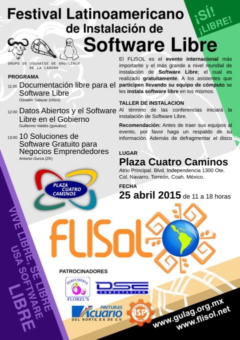

FLISOL 2015
Por Osvaldo, 2015-04-26 11:00

2015, Flisol 2015.
Nuevamente con gran gusto se empezó a preparar todo lo necesario para la celebración del Festival Latinoamericano de Instalación de Software Libre en La Comarca Lagunera con el objetivo de promover y difundir el uso de Software Libre
No tuvimos problema en elegir la sede, Plaza Cuatro Caminos, atrio principal, en Torreón, Coahuila, México, y contamos con la siempre creativa participación de Guivaloz para el diseño del poster, mismo que pueden descargar libremente.
Disfrutamos también el visitar escuelas y empresas de la Comarca Lagunera para invitarlos a asistir al Flisol; de igual manera disfrutamos el platicar a nuestros amigos y todo el que quisiera escucharnos, ya sea del ámbito informático o no.
Aquí un promocional (a partir del minuto 4:57)
Iniciamos el Flisol con 3 conferencias:
- Documentación Libre para el Software Libre por Osvaldo Salazar (Chico)
- Datos Abiertos y el Software Libre en el Gobierno por Guillermo Valdés (guivaloz)
- 10 Soluciones de Software Gratuito para Negocios Emprendedores por Alejandro Pineda (DeathScytheH)

En la primer conferencia, Documentación Libre para el Software Libre, se nos habló de los origenes de OpenOffice y LibreOffice, se explicó que es OpenDocument y la norma ISO en la cual se basa. También se explicó la falsedad de la campaña “M$ love Linux” y los riesgos que uno tiene al enviar un adjunto en formato privativo, de igual manera se invitó a los asistentes a que insistan en el uso de estándares abiertos. Se terminó la conferencia desarrollando una de las muchas razones por que no le gustan a el conferencista los programas privativos de ofimática: Porque impide que usuarios den el salto al Software Libre.

En la segunda conferencia, Datos Abiertos y el Software Libre en el Gobierno, se nos habló de manera amena las libertades del Software Libre, de los fundadores de los proyectos GNU y Linux y, de la enorme ventaja que tenemos de usar los datos abiertos que proporciona el mismo gobierno; las ventajas de usarlos como lo han realizado en varios proyectos facilitando el acceso y la toma de desiciones. Concluyó su conferencia hablando de los proyectos que veremos en el futuro relacionados con el Software Libre.

En la última conferencia se explicaron 10 programas que podemos utilizar en nuestra empresa, o en la que estemos por formar, de manera gratuita y sin problemas con licencias: Thunderbird, Kali, LibreOffice, por mencionar algunos.
Al terminar las conferencias se procedio a instalar GNU/Linux en los equipos que los asistentes llevaron (con algunos interesantes retos a resolver) y algunos se llevaron una copia de las distribuciones que se instalaron:
- Debian
- OpenSUSE
- Guadalinex
- Manjaro
- Mint
- Trisquel
- Ubuntu
Es de notar la participación de escuelas entre las que sobresalieron maestros y alumnos del Instituto Tecnológico de San Pedro y de la Escuela de Sistemas de la U.A. de C.
Esperando que lo aprendido les sea de utilidad los esperamos en el siguiente Flisol y en los eventos que organicemos en el GULAG… pero si no pueden esperar tanto, los invitamos a las reuniones que realizamos cada mes así como unirse a la lista de correo del grupo.
Hasta pronto :)
Enlaces a notas
Descargas
{kind=link}
Nota originalmente publicada en el sitio del GULAG